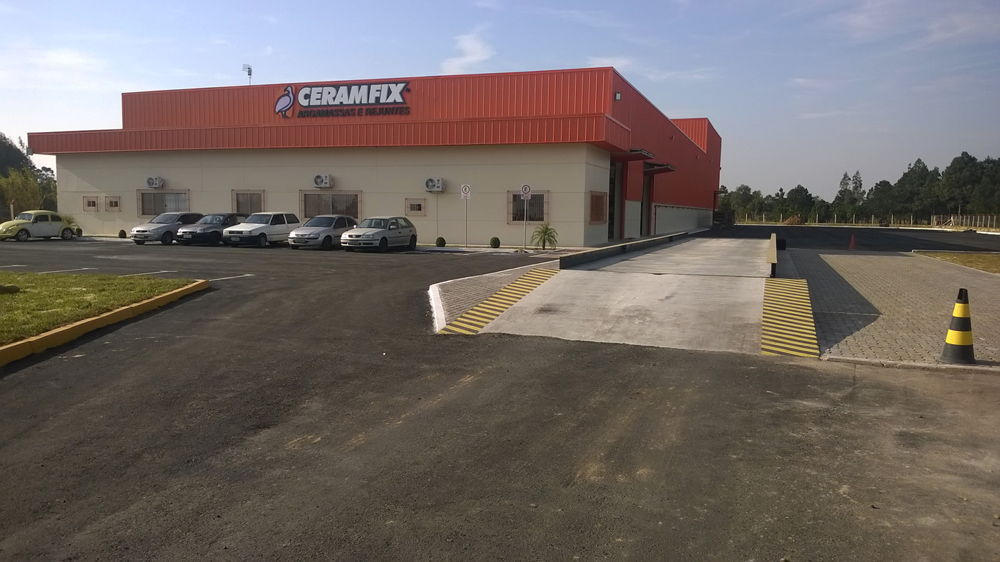
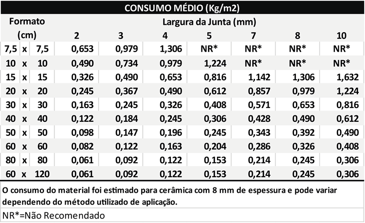
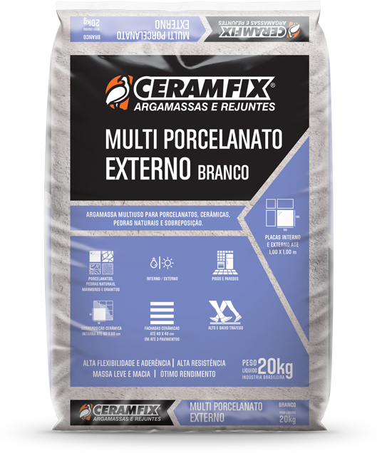
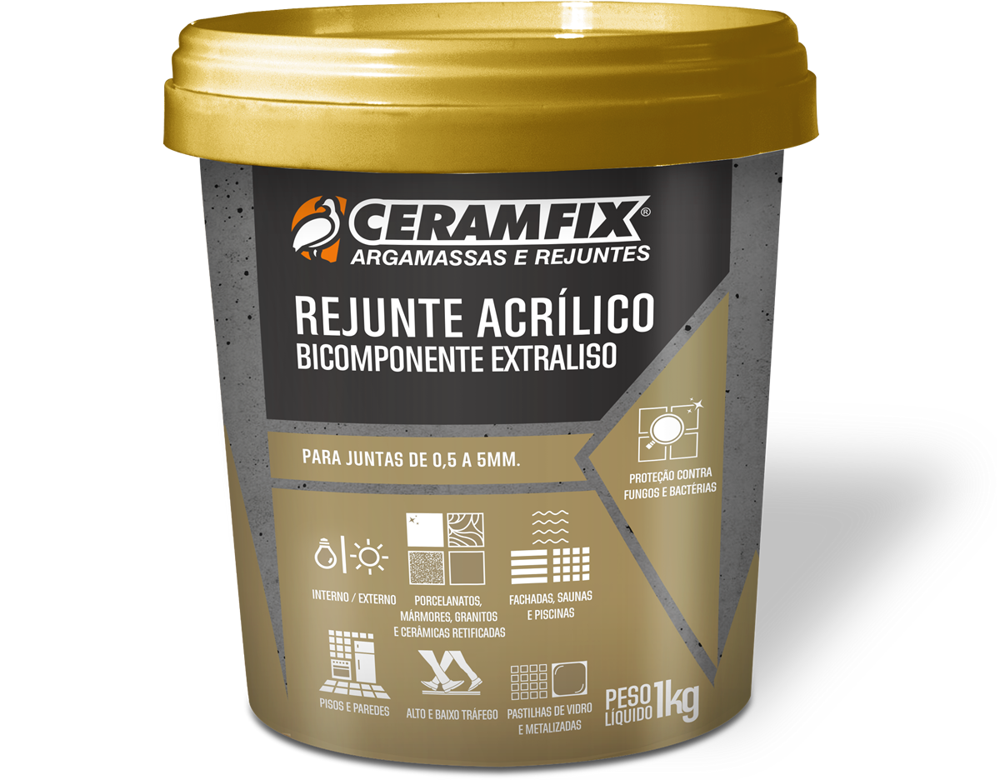
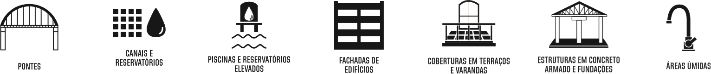
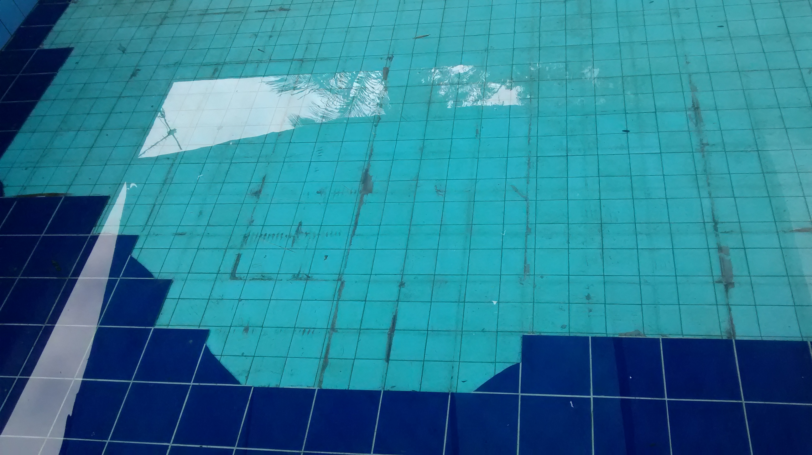

Para uso interno, em áreas que possam ter pequenas movimentações e variações de temperatura como em: cozinhas, banheiros, salas, quartos, etc.
VÍDEO INSTITUCIONAL
NOSSAS UNIDADES
Gaspar - SC
Chapecó - SC
Osório - RS

Alto Paraná - PR

Rio Claro - SP
Campo Grande - MS

Abadiânia - GO
Serra - ES
Confins - MG
Ciudad Del Este - PY
NOSSO TIME
MISSÃO
"Oferecer soluções práticas, ágeis e seguras para a construção civil."
VISÃO
"Inserir a marca Ceramfix como referência entre as maiores forças do mercado nacional."
POLÍTICA DE QUALIDADE
"Atingir a satisfação do cliente através da melhoria contínua dos processos internos, produtos e serviços;
capacitação permanente dos colaboradores; atenção à segurança, saúde e meio ambiente."
NÚMEROS

ISO 9001:2015

ISO 9001 – VAMOS ENTENDER?

CERTIFICADOS
CAMPANHA CÂNCER DE MAMA
Patrocinamos a Rede Feminina de Combate ao Câncer de Mama e fazemos diversas ações de
conscientização voltadas para o público objetivado.
CASA LAR
ACIG
Participamos da ACIG (Associação Comercial e Industrial de Gaspar-SC) que tem como
objetivo dar suporte aos conselhos de classe empresarial, que visa o crescimento da região com o intuito de
capacitar e formar empresários na cidade.

COMUNIDADE
O Clube Atlético Tupi, de Gaspar/SC, recebe o nosso patrocínio. A principal bandeira do
time é a inclusão social, por meio do esporte.
APAE
IMA
O Instituto do Meio Ambiente é o órgão ambiental da esfera estadual do Governo de Santa
Catarina, que tem como missão a garantia da preservação dos recursos naturais do Estado.

RANKING
RANKING
ARGAMASSAS COLANTES
RANKING
REJUNTAMENTOS
PRÊMIOS
ANAMACO
TOP 10 ANAMACO
Nosso esforço se projeta em
bons resultados, o que nos leva a mais uma vez ficar no TOP 10 da Revista Anamaco.
Esse resultado é graças aos nossos clientes que confiam e acreditam em nosso trabalho, tornando a empresa reconhecida como uma das melhores no segmento de material de construção do País*.
*TOP 10 Anamaco:
- Logística, nos segmentos Argamassas Colantes e Rejuntamentos Cerâmicos;
- Orientação Técnica, no segmento Argamassas Colantes e Rejuntamentos Cerâmicos.
Esse resultado é graças aos nossos clientes que confiam e acreditam em nosso trabalho, tornando a empresa reconhecida como uma das melhores no segmento de material de construção do País*.
*TOP 10 Anamaco:
- Logística, nos segmentos Argamassas Colantes e Rejuntamentos Cerâmicos;
- Orientação Técnica, no segmento Argamassas Colantes e Rejuntamentos Cerâmicos.
PRÊMIO ANAMACO 2019
REVISTA REVENDA
MELHOR PRODUTO DO ANO 2019
TOP OF MIND 2017
VENDEDOR NOTA 10
Ser empreendedor é executar os sonhos, mesmo que haja riscos
Tratar o cliente pelo nome
Sorrir
Ser cordial
Ter boa apresentação pessoal
Utilizar a expressão corporal
Ser flexível a mudanças
Trabalhar com amor e dedicação
Sorrir
Ser cordial
Ter boa apresentação pessoal
Utilizar a expressão corporal
Ser flexível a mudanças
Trabalhar com amor e dedicação
VENDEDOR NOTA 10
VENDEDOR NOTA 10
Merecemos MAIS! Para isso, precisamos ser MAIS.
VENDEDOR NOTA 10
Ser empreendedor é executar os sonhos,
mesmo que haja riscos.
mesmo que haja riscos.
VENDEDOR NOTA 10
A melhor maneira de predizer o futuro, é criá-lo.
VENDEDOR NOTA 10
Ser vendedor é enfrentar os problemas,
mesmo não tendo forças. É tomar atitudes que ninguém tomou.
mesmo não tendo forças. É tomar atitudes que ninguém tomou.
VENDEDOR NOTA 10
Mude as palavras. Mude Seu mundo!
VENDEDOR NOTA 10
Lembre-se, você é um VENDEDOR DE SONHOS.
A COMUNICAÇÃO e a CRIATIVIDADE fazem parte
da vida de todo profissional de VENDAS.
A COMUNICAÇÃO e a CRIATIVIDADE fazem parte
da vida de todo profissional de VENDAS.
VENDEDOR NOTA 10
Precisamos pensar diferente, traçar novas estratégias, mudar a rotina e treinar a ousadia.
VENDEDOR NOTA 10
É preciso ter consciência de que quem vence sem obstáculos
triunfa sem glória. Para isso, é preciso ter determinação e foco!
triunfa sem glória. Para isso, é preciso ter determinação e foco!
VENDEDOR NOTA 10
Para refletirmos...
OBRA
NOTA 10
DICAS PARA ASSENTAMENTOS
1) Impermeabilize o contrapiso. A presença de umidade pode ser difícil de ser
percebida e a consequência disso pode ser o desplacamento da peça e o aparecimento de manchas no rejunte,
além da redução de sua vida útil.

DICAS PARA ASSENTAMENTOS
2) Limpe a superfície onde a peça será assentada, removendo resíduos de pó, óleos,
tintas ou outros materiais que possam prejudicar a aderência.
DICAS PARA ASSENTAMENTOS
3) Umedeça a superfície, levemente, somente em dias quentes, em contato direto com
sol ou vento e também quando houver bases muito absorventes.

DICAS PARA ASSENTAMENTOS
4) A maioria dos problemas de desplacamento de peças é causada por falta da dupla
camada da argamassa nas placas com medidas maiores que 30x30 cm, além da falta de esmagamento dos
cordões da argamassa.

DICAS PARA ASSENTAMENTOS
5) As placas devem estar secas, limpas, isentas de pó, engobe ou partículas que
impeçam a aderência da argamassa colante.

DICAS PARA ASSENTAMENTOS
6) Misture bem a argamassa até obter uma massa homogênea e sem grumos. Para as
nossas argamassas não há necessidade de tempo de espera para utilizar o produto.
DICAS PARA ASSENTAMENTOS
7) Utilize o produto até o prazo máximo de 2 horas e não readicione água ou
qualquer outro produto após a mistura.

DICAS PARA ASSENTAMENTOS
8) Para verificar a aderência, remova aleatoriamente algumas placas imediatamente
após o assentamento e observe no verso se a argamassa está totalmente impregnada na placa. Isso garante que
as placas fiquem bem aderidas e sem o som oco que indica o problema no assentamento.

DICAS PARA ASSENTAMENTOS
9) Não esqueça de remover a argamassa excedente nas juntas após, aproximadamente, 2
a 4 horas do assentamento. É muito mais fácil retirar a argamassa neste momento, pois faz menos sujeiras e
ainda não está endurecida.

DICAS PARA ASSENTAMENTOS
10) Em pisos, deixe as peças afastadas de 5mm a 10mm da parede. Isso ajudará na
flexibilidade, evitando o possível desplacamento nesse local.

DICAS PARA ASSENTAMENTOS
Piso sobre piso e azulejo sobre azulejo:
1) Examine se as placas antigas estão firmes. Bata levemente sobre as mesmas. O som oco indica que a peça está solta. Essa deve ser removida.
2) Limpe a superfície removendo resíduos de pó, óleos, tintas, ceras ou materiais que possam prejudicar a aderência.
1) Examine se as placas antigas estão firmes. Bata levemente sobre as mesmas. O som oco indica que a peça está solta. Essa deve ser removida.
2) Limpe a superfície removendo resíduos de pó, óleos, tintas, ceras ou materiais que possam prejudicar a aderência.
Lembre-se:
Proteja o assentamento contra chuvas e aguarde o tempo de liberação do produto para o trânsito de pessoas e o início do rejuntamento.
Proteja o assentamento contra chuvas e aguarde o tempo de liberação do produto para o trânsito de pessoas e o início do rejuntamento.

DICAS PARA REJUNTAMENTO
1) Impermeabilize a base antes do assentamento e rejuntamento das placas. A maioria
dos problemas de manchas no rejunte ocorre devido a isso.

DICAS PARA REJUNTAMENTO
2) O excesso ou falta de água limpa no produto poderá causar esfarelamento
no rejuntamento, por isso utilize água limpa e na quantidade informada na embalagem.

DICAS PARA REJUNTAMENTO
3) Utilize o produto até o prazo máximo de 2 horas e não readicione água ou
qualquer outro produto após a mistura.
DICAS PARA REJUNTAMENTO
4) A aplicação do rejuntamento somente deve ser iniciada após o prazo de liberação da
argamassa colante, caso contrário poderão aparecer manchas, esfarelamentos, fissuras, etc.

DICAS PARA REJUNTAMENTO
5) Limpe as juntas das placas. Elas devem estar isentas de resíduos de argamassa,
pó, óleos e qualquer outro material que impeça a perfeita penetração e aderência do rejuntamento.

DICAS PARA REJUNTAMENTO
6) Para um rejuntamento liso e um trabalho perfeito, dê o acabamento com uma
espuma macia, de alta densidade e levemente úmida antes do endurecimento do rejunte. Quanto mais seco
melhor, porém, cuidado para não passar do ponto. Isto faz com que o rejunte fique mais liso, mais bonito e
no mesmo nível das cerâmicas.

DICAS PARA REJUNTAMENTO
7) Cuidado com peças porosas, não esmaltadas ou antiderrapantes. Para essas, se
recomenda evitar o contato com o rejuntamento, protegendo-as.

Lembre-se:
Sempre proteja o produto do sol, vento ou chuva;
Não caminhe sobre as peças recém-rejuntadas para não danificar o produto;
Para nossos rejuntamentos, não há necessidade de tempo de espera para utilizar o
produto;
Verifique qual a largura mínima especificada pelo fabricante da placa para as
juntas de assentamento. Isso garantirá um perfeito trabalho sem aparecimento de rachaduras e fissuras no
rejuntamento.
Anote:
Para o preparo do rejuntamento tipo epóxi da Ceramfix, consulte as informações no verso da embalagem, no site ou em nosso serviço de atendimento.
Para o preparo do rejuntamento tipo epóxi da Ceramfix, consulte as informações no verso da embalagem, no site ou em nosso serviço de atendimento.
CONHECENDO
ARGAMASSAS COLANTES
TIPOS E CLASSIFICAÇÕES
Existem dois tipos de argamassa colante: RÍGIDAS e FLEXÍVEIS. Estes são classificados em
dois grupos conforme o uso: interno e externo.
Para uso externo, em áreas que possam ter grandes movimentações e variações de temperatura e umidade como em: garagens, calçadas, fachadas, ambientes de loja, padarias, supermercados, hospitais, etc.
DEFINIÇÃO AC I, AC II, AC III
As argamassas colantes devem seguir conforme a norma 14081 da ABNT (Associação Brasileira
de Normas Técnicas), a qual definiu:
Uso em ambientes internos com características de resistência às pequenas movimentações e variações de temperatura e umidade.
Uso em ambientes internos e externos com característica de adesividade que permite absorver as movimentações e variações de temperatura, umidade e ação do vento existentes em pisos e paredes nesses ambientes.
Uso em ambientes internos e externos com características superiores em relação às argamassas dos tipos I e II.
Além das argamassas colantes especificadas pela ABNT, a Ceramfix possui produtos específicos para determinadas aplicações como: porcelanato, pedras naturais, secagem rápida, pastilhas, etc.
VOCÊ SABIA?
ANCORAGEM MECÂNICA
ANCORAGEM QUÍMICA
CONHECENDO
REJUNTAMENTO
TIPOS
Conforme as normas da ABNT, existem dois tipos de argamassa para rejuntamento:
TIPO I
TIPO II
ANOTE
TIPO I
Uso em ambientes internos e externos,
desde que observadas as seguintes
condições restritas:
- Placas cerâmicas com absorção de água acima de 3% (Classe BII e BIII);
- Aplicação em ambientes externos, piso ou parede, desde que não excedam 20m² e 18m², respectivamente. Limite a partir do qual são exigidas as juntas de movimentação.
TIPO II
Uso em ambientes internos e externos, desde que observadas as seguintes condições:
- Todas as condições do Tipo I; Aplicação em locais de alto tráfego de pedestres;
- Aplicação em placas cerâmicas com absorção de água inferior a 3%. Ex.: porcelanato, grês, pedras naturais e pastilhas;
- Aplicação em ambientes externos, piso ou parede, de qualquer dimensão ou sempre que exijam as juntas de movimentação;
ANOTE
Além das argamassas de rejuntamento especificadas pela ABNT, a Ceramfix possui produtos
específicos para determinada aplicação, como o rejuntamento epóxi, que é composto por resinas epóxis,
endurecedores e agente de cura. Indicado para situações onde se necessita maior resistência química,
mecânica e durabilidade. Oferece um ótimo acabamento e facilidade de limpeza.
CÁLCULO DE RENDIMENTO
TABELA
CÁLCULO CONSUMO REJUNTAMENTO
TABELA REJUNTE PORCELANATOS E PEDRAS

CÁLCULO CONSUMO REJUNTAMENTO
1) Descubra o tamanho do seu revestimento.
CÁLCULO CONSUMO REJUNTAMENTO
2) Defina qual a largura da junta que você irá querer. Lembre-se: Sempre respeitar a
largura mínima informada pelo fabricante do revestimento.
Nesse exemplo, escolheremos:
4mm.
Nesse exemplo, escolheremos:
4mm.
CÁLCULO CONSUMO REJUNTAMENTO
3) Vá até a tabela e cruze as informações:
Tamanho do revestimento X largura da junta escolhida = ao consumo médio.
Nesse exemplo: 0,122 kg/m²
Tamanho do revestimento X largura da junta escolhida = ao consumo médio.
Nesse exemplo: 0,122 kg/m²
CÁLCULO CONSUMO REJUNTAMENTO
4) Agora ficou fácil.
É só multiplicar o consumo médio informado pela área que você irá assentar.
Nesse exemplo, faremos o cálculo para 100m².
0,122 x 100m² = 12,2.
R: Nesse caso, utilizaremos 12,2 Kg de rejuntes.
É só multiplicar o consumo médio informado pela área que você irá assentar.
Nesse exemplo, faremos o cálculo para 100m².
0,122 x 100m² = 12,2.
R: Nesse caso, utilizaremos 12,2 Kg de rejuntes.
REJUNTAMENTO SEM AREIA
Por que optamos em não colocar areia na formulação dos nossos
rejuntamentos?
Substituímos a areia por calcário dolomítico (dolomita). Mesmo com o aumento do custo do produto, optamos por essa substituição para proporcionar um rejuntamento:
Substituímos a areia por calcário dolomítico (dolomita). Mesmo com o aumento do custo do produto, optamos por essa substituição para proporcionar um rejuntamento:
- Muito mais liso;
- Com maior durabilidade da cor;
- Resistente a fungos.
PORTFÓLIO
LINHA CASA
Arga Externa Aditivada ACII (Cinza e Branca)
EXCELENTE ADERÊNCIA, RESISTÊNCIA E FLEXIBILIDADE.
Arga Externa Aditivada ACII (Cinza e Branca)
INDICAÇÕES DE USO:
INDICAÇÕES DE USO COMPLEMENTARES:
Assentamento em:
- Placas cerâmicas com absorção de água 3%;
- Áreas úmidas;
- Revestimentos em fachadas de peças cerâmicas até 40 cm x 40 cm e absorção de água entre 3 % e 6 % até 3 pavimentos;
Rejunte Cerâmicas
RESISTENTE À FUNGOS E MOFOS!
Rejunte Cerâmicas
INDICAÇÕES DE USO:
INDICAÇÕES DE USO COMPLEMENTARES:
- Cerâmicas assentadas em pisos e paredes à base de cimento (reboco ou contra piso);
- Placas cerâmicas com absorção > 3% (classes BII e BIII).
Rejunte Porcelanatos e Pedras
RESISTENTE À FUNGOS E MOFOS!
Rejunte Porcelanatos e Pedras
INDICAÇÕES DE USO:
INDICAÇÕES DE USO COMPLEMENTARES:
- Pisos e paredes (inclusive assentamentos piso sobre piso);
- Placas cerâmicas, porcelanatos, pedras naturais, blocos de vidro, pastilhas de vidro ou porcelana.
Massa Contrapiso Cinza
AGILIDADE E SEGURANÇA NA OBRA.
Massa Contrapiso Cinza
INDICAÇÕES DE USO:
INDICAÇÕES DE USO COMPLEMENTARES:
- Camadas de regularização;
- Bases de concreto simples ou armado.
Massa Multiuso Pronta Cinza

AGILIDADE E SEGURANÇA NA OBRA.
Massa Multiuso Pronta Cinza
INDICAÇÕES DE USO:
LINHA ESPECIALISTA
Chapisco Colante Cinza
FÁCIL DE APLICAR, ÓTIMO RENDIMENTO.
Chapisco Colante Cinza
INDICAÇÕES DE USO:
Chapisco Rolado
AGILIDADE E ECONOMIA PARA SUA OBRA.
Chapisco Rolado
INDICAÇÕES DE USO:
Massa Graute 40 Cinza

CHUMBAMENTOS, FIXAÇÃO E FUNDAÇÕES.
Massa Graute 40 Cinza
INDICAÇÕES DE USO:
INDICAÇÕES DE USO COMPLEMENTARES:
- Grauteamento e fixação de bases de equipamentos e máquinas de pequeno porte;
- Alvenaria estrutural (consulte calculista do projeto para verificar a compatibilidade de resistência da Massa Graute 40 com a resistência final desejada para a alvenaria).
REVESTLISO E TEXTURA CAMADA FINA COLORIDO
OBRA MAIS LIMPA, ACABAMENTO LISO.
REVESTLISO E TEXTURA CAMADA FINA COLORIDO
INDICAÇÕES DE USO:

INDICAÇÕES DE USO COMPLEMENTARES:
- Emboço ou reboco de alvenaria;
- Concretos;
- Gesso acartonado (drywall).
Revestliso Massa Niveladora Branca e Cinza
OBRA MAIS LIMPA, ACABAMENTO LISO.
Revestliso Massa Niveladora Branca e Cinza
INDICAÇÕES DE USO:
INDICAÇÕES DE USO COMPLEMENTARES:
- Blocos estruturais;
- Blocos de tijolos não estruturais;
- Gesso acartonado (Drywall);
- Superfícies pintadas ou texturas.
Cozinhas e Banheiros Cinza
PROTEÇÃO EXTRA PARA ASSENTAMENTOS EM ÁREAS MOLHADAS.
Cozinhas e Banheiros Cinza
INDICAÇÕES DE USO:
INDICAÇÕES DE USO COMPLEMENTARES:
Assentamento em:
- Áreas úmidas;
- Pisos e paredes a base de cimento (reboco ou contrapiso)
- Placas cerâmicas(1) até 80 x 80 cm;
- Pastilhas de cerâmica.
CONSUMO:
Camada simples – peças de até 30x30 cm ± 4,0 Kg/m2
Camada dupla – maiores que 30x30 cm ± 7,5 Kg/m2
Multi Porcelanato Interno Branco e Cinza
PORCELANATOS E MUITO MAIS!
Multi Porcelanato Interno Branco e Cinza
INDICAÇÕES DE USO:
INDICAÇÃO DE USO COMPLEMENTAR:
- Placas cerâmicas(1) e porcelanatos de até 100 x 100 cm pisos e paredes de
áreas internas aplicadas sobre contrapiso e reboco;
- Placas cerâmicas(1) e porcelanatos de até 80 x 80 cm pisos e paredes de áreas externas aplicadas sobre contrapiso e reboco;
- Placas cerâmicas (classe de absorção BIIa e BIIb) e porcelanatos de até 40 x 40 cm em fachadas de até 3 pavimentos e aplicadas sobre reboco;
- Mármores e granitos de até 100 x 100 cm e 2 cm de espessura em pisos e paredes de áreas internas e aplicados sobre contrapiso e reboco;
- Mármores e granitos de até 80 x 80 cm e 2 cm de espessura em pisos e paredes de áreas externas e aplicados sobre contrapiso e reboco;
- Pedras naturais(2) (Ardósia, Miracema, São Tomé, Pedra Madeira, etc.) de até 60 x 60 cm e espessura de até 3 cm em pisos de áreas interna e externas;
- Placas cerâmicas(1) e porcelanatos de até 80 x 80 cm pisos e paredes de áreas externas aplicadas sobre contrapiso e reboco;
- Placas cerâmicas (classe de absorção BIIa e BIIb) e porcelanatos de até 40 x 40 cm em fachadas de até 3 pavimentos e aplicadas sobre reboco;
- Mármores e granitos de até 100 x 100 cm e 2 cm de espessura em pisos e paredes de áreas internas e aplicados sobre contrapiso e reboco;
- Mármores e granitos de até 80 x 80 cm e 2 cm de espessura em pisos e paredes de áreas externas e aplicados sobre contrapiso e reboco;
- Pedras naturais(2) (Ardósia, Miracema, São Tomé, Pedra Madeira, etc.) de até 60 x 60 cm e espessura de até 3 cm em pisos de áreas interna e externas;
Multi Porcelanato Externo Branco e Cinza

PORCELANATOS E MUITO MAIS!
Multi Porcelanato Externo Branco e Cinza
INDICAÇÕES DE USO:
INDICAÇÕES DE USO COMPLEMENTARES:
- Placas cerâmicas(1) e porcelanatos de até 140 x 140 cm em pisos e paredes de áreas internas e aplicadas
sobre contrapiso e reboco;
- Placas cerâmicas(1) e porcelanatos de até 100 x 100 cm em pisos e paredes de áreas externas e aplicadas sobre contrapiso e reboco;
- Mármores e granitos de até 140 x 140 cm e 2 cm de espessura em pisos e paredes de áreas internas e aplicados sobre contrapiso e reboco;
- Mármores e granitos de até 100 x 100 cm e 2 cm de espessura em pisos e paredes de áreas externa e aplicados sobre contrapiso e reboco;
- Pedras naturais(2) (Ardósia, Miracema, São Tomé, Pedra Madeira, etc.) de até 80 x 80 cm e espessura de até 3 cm em pisos de áreas interna e externas;
- Placas cerâmicas(1) e porcelanatos de até 100 x 100 cm em pisos e paredes de áreas externas e aplicadas sobre contrapiso e reboco;
- Mármores e granitos de até 140 x 140 cm e 2 cm de espessura em pisos e paredes de áreas internas e aplicados sobre contrapiso e reboco;
- Mármores e granitos de até 100 x 100 cm e 2 cm de espessura em pisos e paredes de áreas externa e aplicados sobre contrapiso e reboco;
- Pedras naturais(2) (Ardósia, Miracema, São Tomé, Pedra Madeira, etc.) de até 80 x 80 cm e espessura de até 3 cm em pisos de áreas interna e externas;
CONSUMO:
Camada simples – peças de até 30x30 cm ± 4,5 Kg/m2
Camada dupla – maiores que 30x30 cm ± 8,0 Kg/m2
Camada dupla – maiores que 30x30 cm ± 8,0 Kg/m2
Piso Sobre Piso Externo Branco e Cinza
PISO SOBRE PISO E MUITO MAIS!
Piso Sobre Piso Externo Branco e Cinza
INDICAÇÕES DE USO:
INDICAÇÕES DE USO COMPLEMENTARES:
- Fachadas: placas cerâmicas (classe de absorção BIIa e BIIb) de até 20 x 20 cm até o primeiro pavimento;
- Mármores e granitos de até 120 x 120 cm e 2 cm de espessura em pisos e paredes de áreas internas e aplicados sobre contrapiso e reboco;
- Mármores e granitos de até 100 x 100 cm e 2 cm de espessura em pisos e paredes de áreas internas e aplicados sobre contrapiso e reboco;
- Pedras naturais(2) (Ardósia, Miracema, São Tomé, Pedra Madeira, etc.) de até 80 x 80 cm e espessura de até 3 cm em pisos de áreas interna e externas;
Sobreposições nas seguintes situações:
- Placas cerâmicas(1) e porcelanato de até 100 x 100 cm sobre revestimento cerâmico em pisos e paredes de áreas internas;
- Placas cerâmicas(1) e porcelanato de até 80 x 80 cm sobre revestimento cerâmico em pisos e paredes de áreas externas;
- Fachadas: placas cerâmicas (classe de absorção BIIa e BIIb) de até 20 x 20 cm até o primeiro pavimento;
- Mármores e granitos de até 120 x 120 cm e 2 cm de espessura em pisos e paredes de áreas internas e aplicados sobre contrapiso e reboco;
- Mármores e granitos de até 100 x 100 cm e 2 cm de espessura em pisos e paredes de áreas internas e aplicados sobre contrapiso e reboco;
- Pedras naturais(2) (Ardósia, Miracema, São Tomé, Pedra Madeira, etc.) de até 80 x 80 cm e espessura de até 3 cm em pisos de áreas interna e externas;
Sobreposições nas seguintes situações:
- Placas cerâmicas(1) e porcelanato de até 100 x 100 cm sobre revestimento cerâmico em pisos e paredes de áreas internas;
- Placas cerâmicas(1) e porcelanato de até 80 x 80 cm sobre revestimento cerâmico em pisos e paredes de áreas externas;
Arga Plus Externa ACIII Branca e Cinza
FLEXIBILIDADE, ADERÊNCIA E ÓTIMO RENDIMENTO.
Arga Plus Externa ACIII Branca e Cinza
INDICAÇÕES DE USO:
Sobreposições nas seguintes situações:
- Placas cerâmicas(2) e porcelanato de até 120 x 120 cm sobre revestimento cerâmico e porcelanato em pisos de áreas internas;
- Placas cerâmicas(2) e porcelanato de até 90 x 90 cm sobre revestimento cerâmico e porcelanato em pisos de áreas externas.
Arga Plus Externa ACIII Branca e Cinza
INDICAÇÕES DE USO COMPLEMENTARES:
- Lareiras e churrasqueiras(1), desde que estas estejam revestidas internamente por tijolos refratários.
Para assentar os tijolos refratários internamente, utilizar a argamassa Refratários Ceramfix.
- Placas cerâmicas(2) e porcelanatos de até 150 x 150 cm em pisos e paredes de áreas internas e aplicadas sobre contrapiso e reboco;
- Placas cerâmicas(2) e porcelanatos de até 120 x 120 cm em pisos e paredes de áreas externas e aplicadas sobre contrapiso e reboco;
- Placas cerâmicas(2) e porcelanatos de até 80 x 80 cm em paredes de concreto;
- Placas cerâmicas(2) e porcelanatos de até 60 x 60 cm em paredes de gesso acartonado (drywall);
- Placas cerâmicas (classes de absorção BIIa e BIIb) e porcelanatos de até 60 x 60 cm em fachadas de até 3 pavimentos a partir do piso e aplicadas sobre reboco;
- Placas cerâmicas(2) e porcelanatos de até 150 x 150 cm em pisos e paredes de áreas internas e aplicadas sobre contrapiso e reboco;
- Placas cerâmicas(2) e porcelanatos de até 120 x 120 cm em pisos e paredes de áreas externas e aplicadas sobre contrapiso e reboco;
- Placas cerâmicas(2) e porcelanatos de até 80 x 80 cm em paredes de concreto;
- Placas cerâmicas(2) e porcelanatos de até 60 x 60 cm em paredes de gesso acartonado (drywall);
- Placas cerâmicas (classes de absorção BIIa e BIIb) e porcelanatos de até 60 x 60 cm em fachadas de até 3 pavimentos a partir do piso e aplicadas sobre reboco;
- Placas cerâmicas de até 20 x 20 cm e absorção de água entre 3% e 6% em fachadas(3) de edificações e
aplicadas sobre reboco;
- Pastilhas de porcelana de 7,5 x 7,5 cm em fachadas(3) de edificações e aplicadas sobre reboco;
- Porcelanato de até 30 x 30 cm em piscinas não aquecidas;
- Mármores e granitos de até 150 x 150 cm e 2 cm de espessura em pisos e paredes de áreas internas e aplicados sobre contrapiso e reboco;
- Mármores e granitos de até 120 x 120 cm e 2 cm de espessura em pisos e paredes de áreas externas e aplicados sobre contrapiso e reboco;
- Pedras naturais(4) (Ardósia, Miracema, São Tomé, Pedra Madeira, etc.) de até 90 x 90 cm e espessura de até 3 cm em pisos de áreas interna e externas;
- Porcelanato de até 30 x 30 cm em piscinas não aquecidas;
- Mármores e granitos de até 150 x 150 cm e 2 cm de espessura em pisos e paredes de áreas internas e aplicados sobre contrapiso e reboco;
- Mármores e granitos de até 120 x 120 cm e 2 cm de espessura em pisos e paredes de áreas externas e aplicados sobre contrapiso e reboco;
- Pedras naturais(4) (Ardósia, Miracema, São Tomé, Pedra Madeira, etc.) de até 90 x 90 cm e espessura de até 3 cm em pisos de áreas interna e externas;
Arga Flash Branca
EM POUCAS HORAS SUA OBRA PRONTA.
Arga Flash Branca
INDICAÇÕES DE USO:
INDICAÇÃO DE USO COMPLEMENTAR:
- Placas cerâmicas(1), porcelanatos e pedras naturais(2) de até 120 x 120 cm em pisos e paredes de áreas internas e aplicados sobre contrapiso e reboco;
- Sobreposição peças cerâmicas e porcelanatos de até 100 x 100 cm sobre revestimento cerâmico em pisos e paredes de áreas internas.
Pastilhas e Mosaicos Interno
ECONOMIA, AGILIDADE E SEGURANÇA.
Pastilhas e Mosaicos Interno
INDICAÇÕES DE USO:
INDICAÇÕES DE USO COMPLEMENTARES:
- Áreas internas;
- Pastilhas até 10 cm x 10 cm.
Junta Fine O Original
ACABAMENTO LISO; RESISTENTE À FUNGOS E MOFOS.
Junta Fine O Original
INDICAÇÕES DE USO:
INDICAÇÕES DE USO COMPLEMENTARES:
- Áreas de alto e baixo tráfego de pessoas;
- Pisos e paredes (inclusive assentamentos de sobreposição).
Blocos de Vidro Branco
EXCELENTE ADERÊNCIA, RESISTÊNCIA E RENDIMENTO.
Blocos de Vidro Branco
INDICAÇÕES DE USO:
INDICAÇÃO DE USO COMPLEMENTAR:
- Assentar e rejuntar cobogó e elementos vazados.
Isola Água Top 5 e 12Kg
Isola Água Top 5 e 12Kg
INDICAÇÕES DE USO:
LINHA PERFORMANCE
Arga Super Formatos e Pedras Especiais Branca e Cinza
ARGAMASSA CLASSIFICADA NO PADRÃO EUROPEU COMO S1 CONFORME EN
12004 E NO PADRÃO BRASILEIRO PELA NBR 14081 ACIII D E.
Arga Super Formatos e Pedras Especiais Branca e Cinza
INDICAÇÕES DE USO:
Sobreposições dos seguintes revestimentos:
Placas cerâmicas(1) e porcelanato de até 150 x 150 cm sobre em pisos de áreas internas aplicados sobre revestimento cerâmico e porcelanato;
Placas cerâmicas(1) e porcelanato de até 120 x 120 cm em pisos de áreas externas aplicados sobre revestimento cerâmico e porcelanato.
Consumo:
Camada simples – peças de até 30x30 cm ± 4,5 Kg/m2
Camada simples – desempenadeira semicircular ± 6,0 Kg/m2
Camada dupla – maiores que 30x30 cm ± 8,0 Kg/m2
Arga Super Formatos e Pedras Especiais Branca e Cinza
INDICAÇÕES DE USO COMPLEMENTARES:
- Áreas comerciais de alto tráfego (aeroportos, shopping centers, edifícios comerciais, etc.);
- Pisos aquecidos até 70°C;
- Placas cerâmicas(2) e porcelanatos de até 300 x 200 cm em pisos e paredes de áreas internas e aplicadas sobre contrapiso e reboco.
- Placas cerâmicas(2) e porcelanatos de até 200 x 200 cm em pisos e paredes de áreas externas e aplicadas sobre contrapiso e reboco;
- Placas cerâmicas(2) e porcelanatos de até 100 x 100 cm em paredes de gesso acartonado;
- Placas cerâmicas (classe de absorção BIIa e BIIb) e porcelanatos de até 60 x 60 cm em fachadas de edificações de até 24 pavimentos(3) de altura a partir do piso e aplicadas sobre reboco;
- Porcelanatos de até 60 cm x 120 cm e até 12 mm de espessura em fachadas de até 3 pavimentos de altura a partir do piso e aplicadas sobre reboco;
- Placas cerâmicas (BIIa e BIIb) de até 10 x 10 cm em fachadas de edificações de até 34 pavimentos(3) de altura a partir do piso e aplicadas sobre reboco;
- Pastilhas de porcelana de até 7,5 x 7,5 cm em fachadas de edificações de até 34 pavimentos(3) de altura a partir do piso e aplicadas sobre reboco;
- Mármores e granitos de até 300 x 200 cm e 2 cm de espessura em pisos e paredes de áreas internas e aplicados sobre contrapiso e reboco;
- Mármores e granitos de até 200 x 200 cm e 2 cm de espessura em pisos e paredes de áreas externas e aplicados sobre contrapiso e reboco;
- Pedras naturais(4) (Ardósia, Miracema, São Tomé, Pedra Madeira, etc.) de até 120 x 120 cm e espessura de até 3 cm em pisos de áreas internas e externas.
- Sobreposições dos seguintes revestimentos:
Placas cerâmicas(1) e porcelanato de até 150 x 150 cm sobre em pisos de áreas internas aplicados sobre revestimento cerâmico e porcelanato;
Placas cerâmicas(1) e porcelanato de até 120 x 120 cm em pisos de áreas externas aplicados sobre revestimento cerâmico e porcelanato.
- Pisos aquecidos até 70°C;
- Placas cerâmicas(2) e porcelanatos de até 300 x 200 cm em pisos e paredes de áreas internas e aplicadas sobre contrapiso e reboco.
- Placas cerâmicas(2) e porcelanatos de até 200 x 200 cm em pisos e paredes de áreas externas e aplicadas sobre contrapiso e reboco;
- Placas cerâmicas(2) e porcelanatos de até 100 x 100 cm em paredes de gesso acartonado;
- Placas cerâmicas (classe de absorção BIIa e BIIb) e porcelanatos de até 60 x 60 cm em fachadas de edificações de até 24 pavimentos(3) de altura a partir do piso e aplicadas sobre reboco;
- Porcelanatos de até 60 cm x 120 cm e até 12 mm de espessura em fachadas de até 3 pavimentos de altura a partir do piso e aplicadas sobre reboco;
- Placas cerâmicas (BIIa e BIIb) de até 10 x 10 cm em fachadas de edificações de até 34 pavimentos(3) de altura a partir do piso e aplicadas sobre reboco;
- Pastilhas de porcelana de até 7,5 x 7,5 cm em fachadas de edificações de até 34 pavimentos(3) de altura a partir do piso e aplicadas sobre reboco;
- Mármores e granitos de até 300 x 200 cm e 2 cm de espessura em pisos e paredes de áreas internas e aplicados sobre contrapiso e reboco;
- Mármores e granitos de até 200 x 200 cm e 2 cm de espessura em pisos e paredes de áreas externas e aplicados sobre contrapiso e reboco;
- Pedras naturais(4) (Ardósia, Miracema, São Tomé, Pedra Madeira, etc.) de até 120 x 120 cm e espessura de até 3 cm em pisos de áreas internas e externas.
- Sobreposições dos seguintes revestimentos:
Placas cerâmicas(1) e porcelanato de até 150 x 150 cm sobre em pisos de áreas internas aplicados sobre revestimento cerâmico e porcelanato;
Placas cerâmicas(1) e porcelanato de até 120 x 120 cm em pisos de áreas externas aplicados sobre revestimento cerâmico e porcelanato.
Rejunte Acrílico Bicomponente Extraliso

Rejunte Acrílico Bicomponente Extraliso
INDICAÇÕES DE USO:
INDICAÇÕES DE USO COMPLEMENTAR:
- Pisos retificados;
- Juntas de 0,5 a 5 mm.
ACIII Duo Tech Branca e Cinza
DUAS ARGAMASSAS EM UMA.
ACIII Duo Tech Branca e Cinza
INDICAÇÕES DE USO:
Sobreposições nas seguintes situações:
Placas cerâmicas(2) e porcelanato de até 120 x 120 cm sobre revestimento cerâmico e porcelanato em pisos de áreas internas;
Placas cerâmicas(2) e porcelanato de até 100 x 100 cm sobre revestimento cerâmico e porcelanato em pisos de áreas externas.
Consumo:
Camada simples – peças de até 30x30 cm ± 4,5 Kg/m2
Camada simples – desempenadeira semicircular ± 6,0 Kg/m2
Camada dupla – maiores que 30x30 cm ± 8,0 Kg/m2
ACIII Duo Tech Branca e Cinza
INDICAÇÕES DE USO COMPLEMENTARES:
- Áreas residenciais e comerciais de alto tráfego;
- Lareiras e churrasqueiras(1), desde que estas estejam revestidas internamente por tijolos refratários. Para assentar os tijolos refratários internamente, recomendamos utilizar a argamassa Refratários Ceramfix.
- Placas cerâmicas(2) e porcelanatos de até 200 x 200 cm em pisos e paredes de áreas internas e aplicados sobre contrapiso e reboco;
- Placas cerâmicas(2) e porcelanatos de até 150 x 150 cm em pisos e paredes de áreas externas e aplicados sobre contrapiso e reboco;
- Placas cerâmicas(2) e porcelanatos de até 80 x 80 cm em paredes de gesso acartonado (drywall);
- Placas cerâmicas (classes de absorção BIIa e BIIb) e porcelanatos de até 60 x 60 cm em fachadas de até 3 pavimentos de altura a partir do piso e aplicados sobre reboco;
- Lareiras e churrasqueiras(1), desde que estas estejam revestidas internamente por tijolos refratários. Para assentar os tijolos refratários internamente, recomendamos utilizar a argamassa Refratários Ceramfix.
- Placas cerâmicas(2) e porcelanatos de até 200 x 200 cm em pisos e paredes de áreas internas e aplicados sobre contrapiso e reboco;
- Placas cerâmicas(2) e porcelanatos de até 150 x 150 cm em pisos e paredes de áreas externas e aplicados sobre contrapiso e reboco;
- Placas cerâmicas(2) e porcelanatos de até 80 x 80 cm em paredes de gesso acartonado (drywall);
- Placas cerâmicas (classes de absorção BIIa e BIIb) e porcelanatos de até 60 x 60 cm em fachadas de até 3 pavimentos de altura a partir do piso e aplicados sobre reboco;
- Placas cerâmicas (classes de absorção BIIa e BIIb) de até 10 x 10 cm em fachadas de edificações de até
22 pavimentos(3) e aplicados sobre reboco;
- Pastilhas de porcelana de até 7,5 x 7,5 cm em fachadas de edificações de até 22 pavimentos(3) e aplicados sobre reboco;
- Mármores e granitos de até 200 x 200 cm e 2 cm de espessura em pisos e paredes de áreas internas aplicados sobre contrapiso e reboco;
- Mármores e granitos de até 150 x 150 cm e 2 cm de espessura em pisos e paredes de áreas externas e aplicados sobre contrapiso e reboco;
- Pedras naturais(4) (Ardósia, Miracema, São Tomé, Pedra Madeira, etc.) de até 100 x 100 cm e espessura de até 3 cm em pisos de áreas internas e externas;
- Pastilhas de porcelana de até 7,5 x 7,5 cm em fachadas de edificações de até 22 pavimentos(3) e aplicados sobre reboco;
- Mármores e granitos de até 200 x 200 cm e 2 cm de espessura em pisos e paredes de áreas internas aplicados sobre contrapiso e reboco;
- Mármores e granitos de até 150 x 150 cm e 2 cm de espessura em pisos e paredes de áreas externas e aplicados sobre contrapiso e reboco;
- Pedras naturais(4) (Ardósia, Miracema, São Tomé, Pedra Madeira, etc.) de até 100 x 100 cm e espessura de até 3 cm em pisos de áreas internas e externas;
Primer Nivela Fácil
Primer Nivela Fácil
INDICAÇÕES DE USO:
INDICAÇÕES DE USO COMPLEMENTARES:
- Pisos de concreto;
- Contrapisos;
- Pisos cerâmicos;
- Porcelanato;
- Pedras naturais.
Autonivelante Nivela Fácil Cinza

IDEAL PARA: PISOS VINÍLICOS, LAMINADOS E PORCELANATOS.
Autonivelante Nivela Fácil Cinza
INDICAÇÕES DE USO:
INDICAÇÃO DE USO COMPLEMENTAR:
- Aplicações até 10 mm de espessura.
AUTONIVELANTE NIVELA FÁCIL 12 HORAS
EXCELENTE BASE PARA PISO VINÍLICO, LAMINADO, PORCELANATOS,
CERÂMICAS E PEDRAS NATURAIS.
AUTONIVELANTE NIVELA FÁCIL 12 HORAS
INDICAÇÕES DE USO:
Pastilhas, Piscinas e Fachadas
ECONOMIA, AGILIDADE E SEGURANÇA.
Pastilhas, Piscinas e Fachadas
INDICAÇÕES DE USO:
Pastilhas, Piscinas e Fachadas
Pastilhas, Piscinas e Fachadas
Pastilhas e Fachadas

Pastilhas e Fachadas
INDICAÇÕES DE USO:
Rejunte Fácil Epóxi

FÁCIL MISTURA, APLICAÇÃO E LIMPEZA.
Rejunte Fácil Epóxi
INDICAÇÕES DE USO:
INDICAÇÕES DE USO COMPLEMENTARES:
- Áreas externas e piscinas (neste caso pode ocorrer amarelamento da resina principalmente em cores mais
claras, devido a exposição prolongada dos raios UV, tendo uma variação apenas estética, não comprometendo
assim a qualidade técnica do produto;
- Pisos retificados;
- Porcelanatos, mármores, granitos e cerâmicas retificadas;
- Pisos e paredes (inclusive assentamentos de sobreposição);
- Pisos aquecidos (até 40°C).
Juntas:
- Pisos: de 2 a 10 mm;
- Paredes: de 2 a 5 mm.
- Pisos retificados;
- Porcelanatos, mármores, granitos e cerâmicas retificadas;
- Pisos e paredes (inclusive assentamentos de sobreposição);
- Pisos aquecidos (até 40°C).
Juntas:
- Pisos: de 2 a 10 mm;
- Paredes: de 2 a 5 mm.
Refratários Cinza
SEGURANÇA E QUALIDADE NA ÁREA DE LAZER.
Refratários Cinza
INDICAÇÕES DE USO:
Isola Água Plus bicomponente
Isola Água Plus bicomponente
INDICAÇÕES DE USO:

Malha CFX 40 AR 50mm

Malha CFX 40 AR 50mm
INDICAÇÕES DE USO:
INDICAÇÕES DE USO COMPLEMENTARES:
A Malha CFX 40 AR é um material de engenharia ideal para uso em construção com as seguintes
aplicações:
- Reforço estruturante em sistemas de Impermeabilizações (cimentícias ou não);
- Reforço estruturante em sistemas de Isolamento Térmico Externo (EIFS);
- Reforço de revestimentos externos (emboço, reboco e revestimentos cimentícios).
É ideal para reforçar materiais cimentícios devido à sua alta resistência mecânica, resistência à corrosão, modo de ruptura e elevado módulo de deformação. Com excelente aderência e estabilidade quando aplicada ao revestimento, apresenta ainda alta resistência ao rasgo, maleável, resistente à retração e a deformação.
Possui ainda elevada resistência a temperatura (à prova de frio e calor), resistente ao fogo, boa estabilidade térmica e dimensional.
- Reforço estruturante em sistemas de Impermeabilizações (cimentícias ou não);
- Reforço estruturante em sistemas de Isolamento Térmico Externo (EIFS);
- Reforço de revestimentos externos (emboço, reboco e revestimentos cimentícios).
É ideal para reforçar materiais cimentícios devido à sua alta resistência mecânica, resistência à corrosão, modo de ruptura e elevado módulo de deformação. Com excelente aderência e estabilidade quando aplicada ao revestimento, apresenta ainda alta resistência ao rasgo, maleável, resistente à retração e a deformação.
Possui ainda elevada resistência a temperatura (à prova de frio e calor), resistente ao fogo, boa estabilidade térmica e dimensional.
CFX JUNTA FLEXÍVEL MULTIDIRECIONAL
CFX JUNTA FLEXÍVEL MULTIDIRECIONAL
INDICAÇÕES DE USO:
INDICAÇÕES DE USO COMPLEMENTARES:
Fita de vedação para:
- Juntas a serem usadas com cerâmica ou pedras naturais para impermeabilização flexível em juntas de dilatação;
- Aplicação em ângulos retos para piscinas ou terraços;
- Cargas médias-altas de água não pressurizada em ambientes internos (mesmo se expostas a agentes químicos adicionais);
- Cargas médias-altas de água não pressurizada ou água com pressão positiva constante para aplicações internas ou externas;
(sanitários domésticos, cozinhas industriais, chuveiros e piscinas, tanto domésticos como públicos, varandas e terraços).
- Juntas a serem usadas com cerâmica ou pedras naturais para impermeabilização flexível em juntas de dilatação;
- Aplicação em ângulos retos para piscinas ou terraços;
- Cargas médias-altas de água não pressurizada em ambientes internos (mesmo se expostas a agentes químicos adicionais);
- Cargas médias-altas de água não pressurizada ou água com pressão positiva constante para aplicações internas ou externas;
(sanitários domésticos, cozinhas industriais, chuveiros e piscinas, tanto domésticos como públicos, varandas e terraços).
Argalastic
Argalastic
INDICAÇÕES DE USO:
INDICAÇÕES DE USO COMPLEMENTARES:
Impermeabilização e assentamento:
- Assentamento em uma única operação (espessura máxima de 5 mm);
- Nota: Sobre suportes sujeitos a muita deformação, inserir uma rede de fibra de vidro.
- Assentamento em uma única operação (espessura máxima de 5 mm);
- Nota: Sobre suportes sujeitos a muita deformação, inserir uma rede de fibra de vidro.
Impermeabilização:
- Contrapisos e rebocos tradicionais;
- Concreto e concreto celular;
- Paredes de fibrocimento;
- Blocos de cimento e concreto;
- Piscina elevada.
- Contrapisos e rebocos tradicionais;
- Concreto e concreto celular;
- Paredes de fibrocimento;
- Blocos de cimento e concreto;
- Piscina elevada.
Assentamento:
- Pisos e paredes, inclusive em áreas de alto tráfego;
- Porcelanato sobre porcelanato em área interna até 1,2 m x 1,2 m;
- Porcelanato sobre porcelanato em área externa até 1 m x 1 m;
- Azulejo sobre azulejo até 80 cm x 80 cm;
- Placas cerâmicas em paredes até 1 m x 1 m;
- Porcelanatos e pedras naturais em áreas externas até 2m x 2m;
- Porcelanatos e pedras naturais em áreas internas até 3m x 2m;
- Fachadas: peças até 60 cm x 120 cm e até 12 mm de espessura;
- Pastilhas de até 10 cm x 10 cm;
- Porcelanatos slim, convencionais e revestimentos de grandes formatos em pisos, dispensam aplicação com dupla camada.
- Pisos e paredes, inclusive em áreas de alto tráfego;
- Porcelanato sobre porcelanato em área interna até 1,2 m x 1,2 m;
- Porcelanato sobre porcelanato em área externa até 1 m x 1 m;
- Azulejo sobre azulejo até 80 cm x 80 cm;
- Placas cerâmicas em paredes até 1 m x 1 m;
- Porcelanatos e pedras naturais em áreas externas até 2m x 2m;
- Porcelanatos e pedras naturais em áreas internas até 3m x 2m;
- Fachadas: peças até 60 cm x 120 cm e até 12 mm de espessura;
- Pastilhas de até 10 cm x 10 cm;
- Porcelanatos slim, convencionais e revestimentos de grandes formatos em pisos, dispensam aplicação com dupla camada.
Ceramlastic
Ceramlastic
INDICAÇÕES DE USO:
INDICAÇÕES DE USO COMPLEMENTARES:
- Coberturas em terraços e varandas;
- Piscinas, banheiras;
- Fachadas de edifícios.
- Piscinas, banheiras;
- Fachadas de edifícios.
Sistema de Segurança para Fixação CFX RAI-FIX
CFX RAI-FIX
INDICAÇÕES DE USO:
CFX RAI-FIX
Sistema de Segurança de Fixação CFX RAI-FIX
O sistema de segurança de fixação CFX RAI-FIX é uma solução muito simples e eficaz
que impede que as placas cerâmicas ou qualquer outro revestimento fixado no sistema
de fachada aderida caiam ao se desprender em caso de falha.
ULTRA PROTETIVO DE SUPERFÍCIES – FOSCO PAREDES
ULTRA PROTETIVO DE SUPERFÍCIES – FOSCO PAREDES
O Ultra Protetivo de Superfícies- Fosco Paredes Ceramfix é um hidrofugante disperso em água a base de silano/siloxano para aplicação superficial em substratos alcalinos e neutros como concreto, tijolo e pedras. É um produto altamente recomendado para aplicação e tratamento do Cimento Queimado Ceramfix. Sua composição possui excelentes propriedades de repelência de água não formando película e sem alterar a aparência original da base.
INDICAÇÕES DE USO:
ULTRA PROTETIVO DE SUPERFÍCIES – SEMI BRILHO PAREDES
ULTRA PROTETIVO DE SUPERFÍCIES – SEMI BRILHO PAREDES
O Ultra Protetivo de Superfícies- Semi Brilho Paredes Ceramfix é um hidrofugante disperso em água a base de silano/siloxano e resina acrílica para aplicação superficial em substratos alcalinos e neutros como concreto, tijolo e pedras. É um produto altamente recomendado para aplicação e tratamento do Cimento Queimado Ceramfix. Sua composição possui excelentes propriedades de repelência de água formando uma leve película e dando um tom acetinado, alterando levemente a aparência original da base.
INDICAÇÕES DE USO:
LINHA FAÇA FÁCIL
Assenta Blocos e Tijolos


FÁCIL APLICAÇÃO E MAIOR PRODUTIVIDADE.
Assenta Blocos e Tijolos
INDICAÇÕES DE USO:
INDICAÇÕES DE USO COMPLEMENTARES:
- Assentar e rejuntar blocos de vidro de qualquer formato;
- Assentar tijolos cerâmicos;
- Assentar blocos de concreto;
- Assentar bloco celular com função de vedação.
Massa para Reparos Rápidos
FÁCIL APLICAÇÃO COM ÓTIMO ACABAMENTO.
Massa para Reparos Rápidos
INDICAÇÕES DE USO
INDICAÇÕES DE USO COMPLEMENTARES:
- Reparos em pisos e paredes com secagem rápida;
- Assentar tijolos cerâmicos;
- Assentar blocos de concreto;
- Fechamento de fendas, buracos, tomadas e interruptores em geral;
- Reposição de revestimentos tipo cerâmicas, porcelanatos, pedras naturais e pastilhas em pisos e paredes;
- Recomposição de rebocos, rodapés e paredes.
Rejunte Premium Acrílico Pronto

FÁCIL APLICAÇÃO. RESISTENTE À FUNGOS E MOFOS.
Rejunte Premium Acrílico Pronto
INDICAÇÕES DE USO:
INDICAÇÕES DE USO COMPLEMENTARES:
- Juntas de 1 a 5 mm;
- Pisos e paredes (inclusive assentamentos piso sobre piso);
- Placas cerâmicas, porcelanatos, pedras naturais, blocos de vidro, pastilhas de vidro ou porcelana;
- Piscinas, fachadas ou saunas.
LINHA DECORATIVA
Linha Ateliê
Belas criações merecem cores exclusivas.
Linha Ateliê
INDICAÇÕES DE USO:
INDICAÇÕES DE USO COMPLEMENTARES:
Rejuntamento em:
- Piso retificado;
- Porcelanatos, mármores, granitos, pastilhas e cerâmicas retificadas;
- Áreas de alto e baixo tráfego;
- (inclusive assentamento de sobreposição);
- Rejuntamento em fachadas, saunas e piscinas;
- Pastilhas de vidro e de porcelana.
- Piso retificado;
- Porcelanatos, mármores, granitos, pastilhas e cerâmicas retificadas;
- Áreas de alto e baixo tráfego;
- (inclusive assentamento de sobreposição);
- Rejuntamento em fachadas, saunas e piscinas;
- Pastilhas de vidro e de porcelana.
Assentamento em e rejuntamento simultâneo
em:
- Peças em piscinas, tanques e espelhos d’água;
- Pisos e paredes a base de cimento (reboco ou contrapiso);
- Pastilhas até 10 cm x 10 cm.
- Peças em piscinas, tanques e espelhos d’água;
- Pisos e paredes a base de cimento (reboco ou contrapiso);
- Pastilhas até 10 cm x 10 cm.
Cimento Queimado
Cimento Queimado
INDICAÇÕES DE USO:

PATOLOGIAS
Manifestação Patológica: Desplacamento de revestimento
Causa: Revestimento maior que 900cm², sem aplicação de argamassa colante em dupla camada.
Prevenção: Realizar aplicação da argamassa colante nas duas interfaces, revestimento e substrato. Conforme NBR 13755.
PATOLOGIAS
Manifestação Patológica: Desplacamento de revestimento
Causa: Tempo em aberto da argamassa colante ultrapassado.
Prevenção: A extensão do pano para assentamento de prever o tempo em aberto contido na embalagem da argamassa colante.
PATOLOGIAS
Manifestação Patológica: Desplacamento de pedra natural
Causa: Assentamento de pedra natural sobre superfície imprópria.
Prevenção: A argamassa deve ter contato diretamente com o substrato (reboco, contrapiso, etc). Conforme consta em Norma (NBR 13.755) ”a superfície do emboço deve estar limpa, isenta de materiais estranhos, como por exemplo pó, óleos, tintas, escorrimentos de concreto, eflorescências, bolores, fuligem, etc...” o que pode comprometer a aderência da argamassa ou não suportar o peso do revestimento, ocasionando o seu descolamento. Nesse caso, se houver pintura, o ideal é proceder com a remoção mecânica da mesma, através de remoção mecânica, exemplo: lixamento com lixa grossa, raspagem, hidrojateamento, uso de escova de aço, etc. Não recomendamos a remoção com removedores químicos, pois poderão deixar resíduos impregnados na superfície, ou apicoamento/picotamento, onde poderá fragilizar a superfície do reboco.
Causa: Assentamento de pedra natural sobre superfície imprópria.
Prevenção: A argamassa deve ter contato diretamente com o substrato (reboco, contrapiso, etc). Conforme consta em Norma (NBR 13.755) ”a superfície do emboço deve estar limpa, isenta de materiais estranhos, como por exemplo pó, óleos, tintas, escorrimentos de concreto, eflorescências, bolores, fuligem, etc...” o que pode comprometer a aderência da argamassa ou não suportar o peso do revestimento, ocasionando o seu descolamento. Nesse caso, se houver pintura, o ideal é proceder com a remoção mecânica da mesma, através de remoção mecânica, exemplo: lixamento com lixa grossa, raspagem, hidrojateamento, uso de escova de aço, etc. Não recomendamos a remoção com removedores químicos, pois poderão deixar resíduos impregnados na superfície, ou apicoamento/picotamento, onde poderá fragilizar a superfície do reboco.
PATOLOGIAS
Aplicação: Rejunte Fine;
Problema: manchas e eflorescência causadas por umidade;
Prevenção: executar a impermeabilização da base anteriormente à camada de revestimento com Isola Água Ceramfix.
PATOLOGIAS

Aplicação: porcelanato 60x60, com uso de desempenadeira fora de norma;
Problema: peças descolando;
Prevenção: realizar o assentamento conforme NBR, esmagar completamente os cordões e fazer dupla camada em peças maiores que 30x30. Se adequar ao uso de desempenadeira dentada normatizada.
PATOLOGIAS
Aplicação: porcelanato 60x60;
Problema: peças descolando, excesso de engobe no porcelanato;
Prevenção: peças devem estar isentas de engobe, fazer a limpeza antes do assentamento.
PATOLOGIAS
Aplicação: RevestLiso Camada Fina;
Problema: retração do reboco e fissuras em toda área de aplicação;
Prevenção: hidratação do reboco, umedecer superfícies em contato direto com o sol e em dias de muito vento.
PATOLOGIAS
Manifestação Patológica: Desplacamento de revestimento
Causa: Uso de argamassa inapropriada para assentado piso sobre piso
Prevenção: deve-se sempre buscar um profissional para especificar a argamassa colante correta para cada situação/local especificidade, neste caso em especifico, o indicado seria o uso de argamassa colante própria para assentamento piso sobre piso.
PATOLOGIAS
Aplicação: porcelanato;
Problema: peças descolando, assentamento realizado com desempenadeira dentada, porém não formou uma camada uniforme, apresenta eflorescência, pois a acúmulo de água sobre a peça;
Prevenção: seguir orientações de aplicação, formar uma camada uniforme de argamassa evitando espaços vazios sobre a peça evitando o acúmulo de água.
PATOLOGIAS
Manifestação Patológica: Ponto da cola de ancoragem das patilhas aparecendo
Causa: Falha na remoção da cola antes do rejuntamento, falha na indicação do rejunte ideal, falha no controle do pH da agua.
Prevenção: Quando possível realizar a remoção dos pingos de cola antes de realizar o rejuntamento, quando utilizado sistema de assentamento e rejuntamento simultâneo, assegurar do uso da argamassa correta e indicar o controle do pH da agua da piscina, para um durabilidade do rejunte exposto.
PATOLOGIAS
Manifestação Patológica: Eflorescência.
Causa: A formação desse problema decorre da migração de uma mistura de água e sais, que após evaporada, deixa os depósitos cristalinos de cor branca e/ou amarelado. A eflorescência costuma ocorrer quando há passagem de umidade do substrato para a superfície do revestimento
Prevenção: Deve-se prever o uso de impermeabilizantes antes do assentamento do revestimento, com esta ação inibe-se a passagem da umidade para a superfície do revestimento carregando os sais pertinentes, a argamassa colante deve ser aplicada diretamente sobre o impermeabilizante, importante citar que este assentamento deve prever compatibilidade entre os sistemas/produtos aplicados.
Causa: A formação desse problema decorre da migração de uma mistura de água e sais, que após evaporada, deixa os depósitos cristalinos de cor branca e/ou amarelado. A eflorescência costuma ocorrer quando há passagem de umidade do substrato para a superfície do revestimento
Prevenção: Deve-se prever o uso de impermeabilizantes antes do assentamento do revestimento, com esta ação inibe-se a passagem da umidade para a superfície do revestimento carregando os sais pertinentes, a argamassa colante deve ser aplicada diretamente sobre o impermeabilizante, importante citar que este assentamento deve prever compatibilidade entre os sistemas/produtos aplicados.
PATOLOGIAS
Aplicação: pastilhas 10x10 unidas por ponto de silicone;
Problema: rejunte soltando;
Prevenção: ponto de silicone em excesso entre as pastilhas, esse excesso dificulta a penetração correta do rejunte, alguns pontos a espessura do rejunte fica com menos de 1,5mm.
PATOLOGIAS
Manifestação Patológica: Rejunte esfarelando
Causa: Excesso de água durante o processo de limpeza e/ou no preparo do rejunte.
Prevenção: Preparar o rejunte com a quantidade de água recomendada na sua embalagem e respeitar o tempo de secagem ideal, antes de proceder com a limpeza da superfície ou expor o rejunte ao contato com água.
PATOLOGIAS
Aplicação: uso de desempenadeira dentada. Ferramenta especificada pela NBR, menor tamanho de dente para assentamento de peças = 6x6x6;
Problema: desempenadeira feita em obra;
Prevenção: utilizar desempenadeira dentro da norma.
PATOLOGIAS

Manifestação Patológica: Desplacamento de revestimento
Causa: Argamassa em camada insuficiente, aplicada em forma de pingos/bolas.
Prevenção: independe da dimensão do revestimento, deve-se sempre prever instalação com ferramentas apropriadas, desempenadeira dentada, e no caso de revestimentos acima de 900cm² deve-se realizar aplicação da argamassa colante nas duas interfaces, revestimento e substrato. Conforme NBR 13755
PATOLOGIAS
Aplicação: aplicação em área externa;
Problema: estufamentos das pastilhas;
Prevenção: realizar juntas de dilatação conforme previsto em norma técnica, paredes em áreas externas deve ser feito juntas a cada 24 m² ou quando uma das dimensões do revestimento for maior que 6 metros.
PATOLOGIAS
Aplicação: porcelanato em área externa;
Problema: trincas em 45° são causadas por problemas estruturais;
Prevenção: monitorar a evolução da trinca para constatar se é passiva ou ativa, se for passiva a trinca não aumentar mais de tamanho podendo ser feito o reparo, se ativa terá que fazer uma avaliação com engenheiro para conserto dos elementos estruturais.
PATOLOGIAS
Aplicação: peça cerâmica;
Problema: trincas em todo revestimento;
Prevenção: realizar juntas de dilatação conforme previsto em norma técnica, em áreas externas deve ser feito juntas a cada 20 m² ou quando uma das dimensões do revestimento for maior que 4 metros.
PATOLOGIAS
Manifestação Patológica: Estufamento
Causa: dilatação térmica do revestimento, ocasionado pela movimentação de ganho e perda de volume conforme clima e temperatura no ambiente.
Prevenção: deve-se sempre prever juntas de dissolidarização nos perímetros do assentamento para suportar as movimentações ao longo da vida útil do revestimento.
PATOLOGIAS
Aplicação: piso sobre piso;
Problema: desplacamento das peças;
Prevenção: fazer aplicação conforme norma técnica, peças acima de 30 x 30 cm fazer aplicação em camada dupla e esmagar completamente os cordões de argamassa.
PATOLOGIAS

Aplicação: piso sobre piso em piscina;
Problema: desplacamento das peças;
Prevenção: não indicado aplicação de piso sobre piso em piscinas.
PATOLOGIAS
Aplicação: rejunte cimentício;
Problema: eflorescência causada por umidade e/ou infiltração;
Prevenção: executar a impermeabilização da base anteriormente à camada de revestimento com Isola Água Ceramfix.
PATOLOGIAS
Aplicação: rejunte cimentício;
Problema: fungos e bolor na junta;
Prevenção: executar a impermeabilização da base anteriormente à camada de revestimento com Isola Água Ceramfix
PATOLOGIAS
Manifestação Patológica: Rejunte com machas
Causa: limpeza do pós obra antes da cura apropriada do rejunte (resistência)
Prevenção: Deve-se sempre aguardar os prazos para trafego e limpeza conforme indicados na sacaria e fichas técnicas do produtos aplicados.